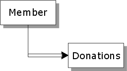

Querying and Sorting Child Tables on a Form
Assume you have a set with a one-many link, as shown below:
.
On a form, you would typically display the data from the Donations table in an embedded browse. This section discusses how you can perform dynamic queries and sorts on the data that is displayed in the form's embedded browse.
 Note : Contrast the
discussion here with setting the filter_expression
and order_expression properties for tables when
you design a form (by selecting the Form > Properties
command). If you specify a filter for a table as Part of the
form's properties, that filter will be replaced by the filter you define
dynamically using the techniques described in this section.
Note : Contrast the
discussion here with setting the filter_expression
and order_expression properties for tables when
you design a form (by selecting the Form > Properties
command). If you specify a filter for a table as Part of the
form's properties, that filter will be replaced by the filter you define
dynamically using the techniques described in this section.
Assume that you would like to put a button on the form to allow the user to filter out donations made before a certain date.
Here is how to do it.
Place a variable called startDate on the form. Make the variable's type "Date" and make its scope "Session" (which is the same as "Shared").
Put three buttons on the form and label the buttons "Query Donations", "Show all Donations" and "Sort by Amount".
Right click on the "Query Donations" button, and assign this Xbasic code to the button's OnPush event:
|
dim shared startDate as D 'Store the current record number for the parent table. 'We do this because after Alpha Five queries the child table 'it resynchronizes itself to the first parent record. 'Our script will keep the focus on the parent record that was 'current when you press the Query Donations button. rec = parentform:tables:invoice_header.recno() 'Set the filter expression for the child (Donations) table parentform:tables:donations.filter_expression = " Donation_date > = var->startDate" 'Run the query on the Donations table parentform:tables:donations.query() 'Go back to the parent table (Members) that had focus parentform:Tables:members.Fetch_Goto(rec) 'Resynchronize the form to display this record parentform.resynch() |
Right click on the Show All Donations button, and assign this Xbasic code to the button's OnPush event:
|
rec = parentform:tables:invoice_header.recno() 'Set the filter expression to .T. to show all records. parentform:tables:donations.filter_expression = ".T." parentform:tables:donations.query() parentform:Tables:members.Fetch_Goto(rec) parentform.resynch() |
Right click on the Sort by Amount button, and assign this Xbasic code to the button's OnPush event:
|
rec = parentform:tables:invoice_header.recno() 'Set the order expression to "amount" parentform:tables:donations.order_expression = "amount" parentform:tables:donations.query() parentform:Tables:members.Fetch_Goto(rec) parentform.resynch() |
Here is another way to sort the embedded browse using form methods, rather that low level table methods. This example gives focus to the embedded browse's "Amount" column and then does a <BROWSE>.QUICK_SORT(). The example assumes that the embedded browse object on the form is called "Browse1".
|
parentform:Browse1:amount.Activate() parentform:Browse1.quick_sort() |
The advantage of using a high level form method (i.e. the <FORM>.QUICK_SORT() method) to perform the sort, is that you do not need to re-synchronize the form. The focus stays on the current parent record. However, you cannot sort using an arbitrarily complex order expression.
See Also